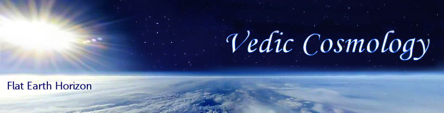

STUDYING THE STRUCTURE OF THE UNIVERSE

Bhū-maṇḍala and its seven islands
Description and Quotes from Śrīmad-Bhāgavatam
Compiled by: Pariksit Das
From the Bible: „God has divided Earth into regions, and made some regions higher and others lower; and He made the constitution of the inhabitants of each region to correspond with the nature of the region.”
"Within the universe the Lord is situated in different spiritual manifestations. These are situated on seven islands in nine sections. Thus Their pastimes are going on." (cc/madhya/20/218)
The Cosmic Lotus Bhū-maṇḍala
The planetary system known as Bhū-maṇḍala resembles a lotus flower, and its seven islands resemble the whorl of that flower. The length and breadth of the island known as Jambūdvīpa, which is situated in the middle of the whorl, are one million yojanas [eight million miles]. Jambūdvīpa is round like the leaf of a lotus flower. (sb/5/16/5)


Bhū-maṇḍala is like a lotus flower, and its seven islands are compared to the whorl of the lotus. The place known as Jambūdvīpa is in the middle of that whorl. In Jambūdvīpa there is a mountain known as Sumeru, which is made of solid gold. The height of this mountain is 84,000 yojanas, of which 16,000 yojanas are below the earth. Its width is estimated to be 32,000 yojanas at its summit and 16,000 yojanas at its foot. (One yojana equals approximately eight miles.) This king of mountains, Sumeru, is the support of the planet earth. (sb/5/16/16_summary)


The Earth as a cosmic petal of the lotus of the Universe
Often the Purāṇas describe 5 divisions of the kingdom of Bhārata, namely, the middle province and those of the four cardinal points, as does the Mahabharata. Some Purāṇic descriptions add the mountain regions of the Vindhyas and the Himālayas, along with their rivers, creating 7 regions. However, the division of Jambudvīpa into 5, 7 or 9 petals is often confused with the division of Bhārata-varṣa into 5, 7 or 9 divisions. There is a good reason for this, as the transcendental template of creating the universe in the shape of a lotus is repeated, just like the fractal repetition found everywhere in nature.


The original Goloka Vṛndāvana Lotus Pattern
This lotus pattern expands from the original vision of Goloka Vṛndāvan, to the outer petals of Mathura, Dwarka and Ayodhya, to the expansion of Vaikuṇtha planets, to the expansion of universes from Mahaviṣṇu, to the creation of the lotus of the 14 worlds, to the creation of the lotus of Bhū-mandala (where Lokāloka Mountains are the boundary petals), to the lotus of Jambūdvīpa (where the Varṣa-Parvata’s are the petals), to the lotus of Earth (which acts like a closed karma lotus bud with Meru at the poles), to the lotus of Eurasia (where the Pamir Mountains represent Meru), and finally to the lotus of Greater India, where Manu’s Brahmāvarta is at the centre, surrounded by eight petals, which are the geographic regions in the eight directions, sometimes called the nine dvīpas or khaṇḍas.

Tamāla Kṛṣṇa: In other words, Śrīla Prabhupāda, Priyavrata had seven children on seven islands, and each one of them had seven children. So each son of Priyavrata divided his island in seven parts, and it was given to one of the grandsons of Priyavrata. We could not show that because it's so small. This is drawn exactly to scale. In order to include all of the Bhū-maṇḍala we had to make everything up very small because, as you'll see, most of Bhū-maṇḍala is made of Loka-varṣa and Lokāloka mountain. Everything else is very small compared to those two.

THE SEVEN ISLANDS OF BHŪ-MAṆḌALA – and their surrounding oceans
2. SĀLMALĪDVĪPA - surrounded by an ocean of liquor (Surāsamudra)
3. KUŚADVĪPA - surrounded by an ocean of clarified butter (Sarpis-samudra)
4. KRAUÑCADVĪPA - surrounded by an ocean of milk (Kṣīra-samudra)
5. ŚĀKADVĪPA - surrounded by an ocean of yogurt (Dadhisamudra)
6. PUṢKARADVĪPA - surrounded by an ocean of clear water (Jalasamudra)
7. JAMBUDVĪPA - surrounded by an ocean of salt water (Lavaṇasamudra)
Divisions of Bhū-maṇḍala – the 7 dvīpas or islands
When Priyavrata drove his chariot behind the sun, the rims of his chariot wheels created impressions that later became seven oceans, dividing the planetary system known as Bhū-maṇḍala into seven islands. (sb/5/1/31)
The seven islands (dvīpas) are known as (1) Jambu, (2) Śāka, (3) Śālmalī, (4) Kuśa, (5) Krauñca, (6) Gomeda, or Plakṣa, and (7) Puṣkara. The planets are called dvīpa. Outer space is like an ocean of air. Just as there are islands in the watery ocean, these planets in the ocean of space are called dvīpas, or islands in outer space. There are nine khaṇḍas, known as (1) Bhārata, (2) Kinnara, (3) Hari, (4) Kuru, (5) Hiraṇmaya, (6) Ramyaka, (7) Ilāvṛta, (8) Bhadrāśva and (9) Ketumāla. These are different parts of the Jambūdvīpa. A valley between two mountains is called a khaṇḍa or varṣa. (cc/madhya/20/218)
PURPORT: It is to be understood that all the dvīpas, or islands, are surrounded by different types of oceans, and it is said herein that the breadth of each ocean is the same as that of the island it surrounds. The length of the oceans, however, cannot equal the length of the islands. According to Vīrarāghava Ācārya, the breadth of the first island is 100,000 yojanas. One yojana equals eight miles, and therefore the breadth of the first island is calculated to be 800,000 miles. The water surrounding it must have the same breadth, but its length must be different. (sb/5/1/33)
THE SEVEN SĀGARA OCEANS
Sāgara; samudra literally means ‘ocean,’ ‘sea’. Any ocean derives its name from the sixty-thousand sons of the emperor Sagara of the solar race, as sāgara, since they were responsible for digging it. Since all the rivers are considered pure, a bath in them makes a person pure and free from all sins. Since all the rivers flow into the sea or the ocean a bath in it also makes a person pure. The sage Agastya is said to have drunk the ocean at the request of Indra, so that the demons, Kālakeyas, who used to hide under its water, could be destroyed.
It is to be understood that all the dvīpas, or islands, are surrounded by different types of oceans, and it is said herein that the breadth of each ocean is the same as that of the island it surrounds. The length of the oceans, however, cannot equal the length of the islands. According to Vīrarāghava Ācārya, the breadth of the first island is 100,000 yojanas. One yojana equals eight miles, and therefore the breadth of the first island is calculated to be 800,000 miles. The water surrounding it must have the same breadth, but its length must be different. (SB 5.1.33, Purport)
The seven oceans respectively contain salt water, sugarcane juice, liquor, clarified butter, milk, emulsified yogurt, and sweet drinking water. All the islands are completely surrounded by these oceans, and each ocean is equal in breadth to the island it surrounds. Mahārāja Priyavrata, the husband of Queen Barhiṣmatī, gave sovereignty over these islands to his respective sons, namely Āgnīdhra, Idhmajihva, Yajñabāhu, Hiraṇyaretā, Ghṛtapṛṣṭha, Medhātithi and Vītihotra. Thus they all became kings by the order of their father. (sb/5/1/33)
BHŪ-MAṆḌALA AND THE SEVEN DVĪPAS
(One yojana equals approximately 8 miles or 13 km)
| No. |
SEVEN DVĪPAS |
Breadth in Yojanas |
Surrounding Ocean of | Sāgara - Samudra |
Regions |
| 7 | PUṢKARADVĪPA | 6,400,000 Y | clear water | Jalasamudra | 2 Varṣas |
| 6 | ŚĀKADVĪPA | 3,200,000 Y | churned yogurt | Dadhisamudra | 7 Varṣas |
| 5 | KRAUÑCADVĪPA | 1,600,000 Y | milk | Kṣīra-samudra | 7 Varṣas |
| 4 | KUŚADVĪPA | 800,000 Y | clarified butter | Sarpis-samudra | 7 Varṣas |
| 3 | SĀLMALĪDVĪPA | 400,000 Y | liquor | Surāsāgara | 7 Varṣas |
| 2 | PLAKṢADVĪPA | 200,000 Y | sugarcane juice | Ikṣusamudra | 7 Varṣas |
| 1 | JAMBUDVĪPA | 100,000 Y | salt water | Lavaṇasamudra | 9 Varṣas |
Thereafter, beyond (Puṣkaradvīpa) the ocean of sweet water and fully surrounding it, is a mountain
named Lokāloka, which divides the countries that are full of sunlight from those not lit by the sun.
The impressions from the rims of Mahārāja Priyavrata’s chariot wheels created seven oceans and seven islands. Of the ten sons of Priyavrata (Āgnīdhra, Idhmajihva, Yajñabāhu, Mahāvīra, Hiraṇyaretā, Ghṛtapṛṣṭha, Savana, Medhātithi, Vītihotra and Kavi), three sons named Kavi, Mahāvīra and Savana accepted sannyāsa, the fourth order of life, and the remaining seven sons became the rulers of the seven islands.
Yaśodā-nandana: The islands are surrounding the oceans. It goes in a circle. There's a whole ocean surrounding one island. And each island is divided by seven mountains and seven rivers, and the main sons of Mahārāja Priyavrata, they also have sons, and each one of those seven divisions are being ruled by the seven grandsons of Mahārāja Priyavrata too.
SAPTA-DVIPA – THE SEVEN ISLANDS OF BHŪ-MAṆḌALA

The seven islands [dvīpas] are named according to the names of the seven sons
In the Bhagavatam (sb/5/20) there is a description of various islands [of Bhū-maṇḍala], beginning with Plakṣadvīpa, and the oceans that surround them. There is also a description of the location and dimensions of the mountain known as Lokāloka.
The great sage Śukadeva Gosvāmī said: Hereafter I shall describe the dimensions, characteristics and forms of the six islands [of Bhū-maṇḍala] beginning with the island of Plakṣa.
In those seven tracts of land, there are seven mountains and seven rivers. The mountains are named Maṇikūṭa, Vajrakūṭa, Indrasena, Jyotiṣmān, Suparṇa, Hiraṇyaṣṭhīva and Meghamāla, and the rivers are named Aruṇā, Nṛmṇā, Āṅgirasī, Sāvitrī, Suptabhātā, Ṛtambharā and Satyambharā. One can immediately be free from material contamination by touching or bathing in those rivers, and the four castes of people who live in Plakṣadvīpa—the Haṁsas, Pataṅgas, Ūrdhvāyanas and Satyāṅgas—purify themselves in that way. The inhabitants of Plakṣadvīpa live for one thousand years. They are beautiful like the demigods, and they also beget children like the demigods. By completely performing the ritualistic ceremonies mentioned in the Vedas and by worshiping the Supreme Personality of Godhead as represented by the sun-god, they attain the sun, which is a heavenly planet.
DESCRIPTION OF THE DVĪPAS OF BHŪ-MAṆḌALA
As Sumeru Mountain is surrounded by Jambūdvīpa, Jambūdvīpa is also surrounded by an ocean of salt water. The breadth of Jambūdvīpa is 100,000 yojanas [800,000 miles], and the breadth of the saltwater ocean is the same. As a moat around a fort is sometimes surrounded by gardenlike forest, the saltwater ocean surrounding Jambūdvīpa is itself surrounded by Plakṣadvīpa.
1. PLAKṢADVĪPA - surrounded by an ocean of sugarcane juice
The breadth of Plakṣadvīpa is twice that of the saltwater ocean—in other words 260,000 yojanas [1,600,000 miles]. On Plakṣadvīpa there is a tree shining like gold and as tall as the jambū tree on Jambūdvīpa. At its root is a fire with seven flames. It is because this tree is a plakṣa tree that the island is called Plakṣadvīpa. Plakṣadvīpa was governed by Idhmajihva, one of the sons of Mahārāja Priyavrata. He endowed the seven islands with the names of his seven sons, divided the islands among the sons, and then retired from active life to engage in the devotional service of the Lord.
Plakṣadvīpa is surrounded by an ocean of sugarcane juice, equal in breadth to the island itself. Similarly, there is then another island—Sālmalīdvīpa—twice as broad as Plakṣadvīpa [400,000 yojanas, or 3,200,000 miles] and surrounded by an equally broad body of water called Surāsāgara, the ocean that tastes like liquor.
2. SĀLMALĪDVĪPA - surrounded by an ocean of liquor
The second island is called Sālmalīdvīpa. It is surrounded by an ocean of liquor and is 3,200,000 miles wide, twice as wide as Plakṣadvīpa. The master of this island is Yajñabāhu, one of the sons of Mahārāja Priyavrata. Like Plakṣadvīpa, this island is also divided into seven regions, each with a mountain and a very large river. The inhabitants of this island worship the Supreme Personality of Godhead in the form of Candrātmā.
On Sālmalīdvīpa there is a śālmalī tree, from which the island takes its name. That tree is as broad and tall as the plakṣa tree—in other words 100 yojanas [800 miles] broad and 1,100 yojanas [8,800 miles] tall. Learned scholars say that this gigantic tree is the residence of Garuḍa, the king of all birds and carrier of Lord Viṣṇu. In that tree, Garuḍa offers Lord Viṣṇu his Vedic prayers.
The son of Mahārāja Priyavrata named Yajñabāhu, the master of Sālmalīdvīpa, divided the island into seven tracts of land, which he gave to his seven sons. The names of those divisions, which correspond to the names of the sons, are Surocana, Saumanasya, Ramaṇaka, Deva-varṣa, Pāribhadra, Āpyāyana and Avijñāta.
In those tracts of land there are seven mountains—Svarasa, Śataśṛṅga, Vāmadeva, Kunda, Mukunda, Puṣpa-varṣa and Sahasra-śruti. There are also seven rivers—Anumati, Sinīvālī, Sarasvatī, Kuhū, Rajanī, Nandā and Rākā. They are still existing.
[The inhabitants of Śālmalīdvīpa worship the demigod of the moon in the following words.] By his own rays, the moon-god has divided the month into two fortnights, known as śukla and kṛṣṇa, for the distribution of food grains to the pitās and the demigods. The demigod of the moon is he who divides time, and he is the king of all the residents of the universe. We therefore pray that he may remain our king and guide, and we offer him our respectful obeisances.
3. KUŚADVĪPA - surrounded by an ocean of clarified butter
The third island, which is surrounded by an ocean of clarified butter and is also divided into seven regions, is called Kuśadvīpa. Its master is Hiraṇyaretā, another son of Mahārāja Priyavrata, and its inhabitants worship the Supreme Personality of Godhead in the form of Agni, the fire-god. The width of this island is 6,400,000 miles, or, in other words, twice the width of Sālmalīdvīpa.
Outside the ocean of liquor is another island, known as Kuśadvīpa, which is 800,000 yojanas [6,400,000 miles] wide, twice as wide as the ocean of liquor. As Śālmalīdvīpa is surrounded by a liquor ocean, Kuśadvīpa is surrounded by an ocean of liquid ghee as broad as the island itself. On Kuśadvīpa there are clumps of kuśagrass, from which the island takes its name. This kuśa grass, which was created by the demigods by the will of the Supreme Lord, appears like a second form of fire, but with very mild and pleasing flames. Its young shoots illuminate all directions.
O King, another son of Mahārāja Priyavrata, Hiraṇyaretā, was the king of this island. He divided it into seven parts, which he delivered to his seven sons according to the rights of inheritance. The King then retired from family life to engage in austerities. The names of those sons are Vasu, Vasudāna, Dṛḍharuci, Stutyavrata, Nābhigupta, Vivikta and Vāmadeva.
In those seven islands there are seven boundary mountains, known as Cakra, Catuḥśṛṅga, Kapila, Citrakūṭa, Devānīka, Ūrdhvaromā and Draviṇa. There are also seven rivers, known as Ramakulyā, Madhukulyā, Mitravindā, Śrutavindā, Devagarbhā, Ghṛtacyutā and Mantramālā. The inhabitants of the island of Kuśadvīpa are celebrated as the Kuśalas, Kovidas, Abhiyuktas and Kulakas worship the Lord in His aspect as the demigod of fire.

4. KRAUÑCADVĪPA - surrounded by an ocean of milk
The fourth island, Krauñcadvīpa, which is surrounded by an ocean of milk, is 12,800,000 miles wide and is also divided, like the others, into seven regions, each with a large mountain and a large river. The master of this island is Ghṛtapṛṣṭha, another son of Mahārāja Priyavrata. The inhabitants of this island worship the Supreme Personality of Godhead in the form of water.
Outside the ocean of clarified butter is another island, known as Krauñcadvīpa, which has a width of 1,600,000 yojanas [12,800,000 miles], twice the width of the ocean of clarified butter. As Kuśadvīpa is surrounded by an ocean of clarified butter, Krauñcadvīpa is surrounded by an ocean of milk as broad as the island itself. On Krauñcadvīpa there is a great mountain known as Krauñca, from which the island takes its name.
The ruler of this island was another son of Mahārāja Priyavrata. His name was Ghṛtapṛṣṭha, and he was a very learned scholar. He also divided his own island among his seven sons. After dividing the island into seven parts, named according to the names of his sons, Ghṛtapṛṣṭha Mahārāja completely retired from family life.
The sons of Mahārāja Ghṛtapṛṣṭha were named Āma, Madhuruha, Meghapṛṣṭha, Sudhāmā, Bhrājiṣṭha, Lohitārṇa and Vanaspati. In their island there are seven mountains, which indicate the boundaries of the seven tracts of land, and there are also seven rivers. The mountains are named Śukla, Vardhamāna, Bhojana, Upabarhiṇa, Nanda, Nandana and Sarvatobhadra. The rivers are named Abhayā, Amṛtaughā, Āryakā, Tīrthavatī, Rūpavatī, Pavitravatī and Śuklā.
5. ŚĀKADVĪPA - surrounded by an ocean of yogurt
The fifth island, Śākadvīpa, which is 25,600,000 miles wide, is surrounded by an ocean of yogurt. Its master is Medhātithi, another son of Mahārāja Priyavrata. It is also divided into seven regions, each with a large mountain and a large river. Its inhabitants worship the Supreme Personality of Godhead in the form of Vāyu, air. (SB 5.20.24-26)
Outside the ocean of milk is another island, Śākadvīpa, which has a width of 3,200,000 yojanas [25,600,000 miles]. As Krauñcadvīpa is surrounded by its own ocean of milk, Śākadvīpa is surrounded by an ocean of churned yogurt as broad as the island itself. In Śākadvīpa there is a big śāka tree, from which the island takes its name. This tree is very fragrant. Indeed, it lends its scent to the entire island. The master of this island, also one of the sons of Priyavrata, was known as Medhātithi. He also divided his island into seven sections, named according to the names of his own sons, whom he made the kings of that island. The names of those sons are Purojava, Manojava, Pavamāna, Dhūmrānīka, Citrarepha, Bahurūpa and Viśvadhāra. After dividing the island and situating his sons as its rulers, Medhātithipersonally retired.
For these lands also, there are seven boundary mountains and seven rivers. The mountains are Īśāna, Uruśṛṅga, Balabhadra, Śatakesara, Sahasrasrota, Devapāla and Mahānasa. The rivers are Anaghā, Āyurdā, Ubhayaspṛṣṭi, Aparājitā, Pañcapadī, Sahasra-śruti and Nijadhṛti.
6. PUṢKARADVĪPA - surrounded by an ocean of clear water
The sixth island, Puṣkaradvīpa, which is twice as wide as the previous island, is surrounded by an ocean of clear water. Its master is Vītihotra, another son of Mahārāja Priyavrata. The island is divided in two by a large mountain named Mānasottara. The inhabitants of this island worship Svayambhū, another feature of the Supreme Personality of Godhead. (SB 5.20.29-31)
Outside the ocean of yogurt is another island, known as Puṣkaradvīpa, which is 6,400,000 yojanas [51,200,000 miles] wide, twice as wide as the ocean of yogurt. It is surrounded by an ocean of very tasteful water as broad as the island itself. On Puṣkaradvīpa there is a great lotus flower with 100,000,000 pure golden petals, as effulgent as the flames of fire. That lotus flower is considered the sitting place of Lord Brahmā, who is the most powerful living being and who is therefore sometimes called bhagavān.
In the middle of that island is a great mountain named Mānasottara, which forms the boundary between the inner side and the outer side of the island. Its breadth and height are 10,000 yojanas [80,000 miles]. On that mountain, in the four directions, are the residential quarters of demigods such as Indra. In the chariot of the sun-god, the sun travels on the top of the mountain in an orbit called the Saṁvatsara, encircling Mount Meru. The sun’s path on the northern side is called Uttarāyaṇa, and its path on the southern side is called Dakṣiṇāyana. One side represents a day for the demigods, and the other represents their night.
The ruler of this island, the son of Mahārāja Priyavrata named Vītihotra, had two sons named Ramaṇaka and Dhātaki. He granted the two sides of the island to these two sons and then personally engaged himself in activities for the sake of the Supreme Personality of Godhead like his elder brother Medhātithi.
Thereafter, beyond the ocean of sweet water and fully surrounding it, is a mountain named Lokāloka, which divides the countries that are full of sunlight from those not lit by the sun.
7. JAMBUDVĪPA
Jambūdvīpa is surrounded by an ocean of salt water. The breadth of Jambūdvīpa is 100,000 yojanas [800,000 miles], and the breadth of the saltwater ocean is the same.
This earth planet is divided into seven parts, and according to others it is divided into nine parts.This earth is called Jambūdvīpa and is divided into nine varṣas. Bhārata-varṣa is one of the above mentioned nine varṣas. Such varṣas are known as continents in the modern geographical context. (sb/1/16/12)
THE NINE VARṢAS, DIFFERENT PARTS OF JAMBŪDVĪPA
(1) Bhārata-varṣa, (2) Kinnara-varṣa, (3) Hari-varṣa, (4) Kuru-varṣa, (5) Hiraṇmaya-varṣa, (6) Ramyaka-varṣa, (7) Ilāvṛta-varṣa, (8) Bhadrāśva-varṣa, (9) Ketumāla-varṣa
Among the nine varṣas, the tract of land known as Bhārata-varṣa is understood to be the field of fruitive activities. Learned scholars and saintly persons declare the other eight varṣas to be meant for very highly elevated pious persons who are meant to enjoy heavenly comfort. After returning from the heavenly planets, they enjoy the remaining results of their pious activities in these eight earthly varṣas. In each of these eight beautiful provinces, the celestial denizens enjoy various standards of material comfort and pleasure. (sb/5/17/11)
ALOKA-VARṢA
Beyond Puṣkaradvīpa there are two islands, one always lit by the sunshine and the other always dark. Between them is a mountain called Lokāloka, which is situated one billion miles from the edge of the universe. Lord Nārāyaṇa, expanding His opulence, resides upon this mountain. The area beyond Lokāloka Mountain is called Aloka-varṣa, and beyond Aloka-varṣa is the pure destination of persons who desire liberation.
Beyond the ocean of sweet water is a tract of land as broad as the area between the middle of Mount Sumeru and the boundary of Mānasottara Mountain. In that tract of land there are many living beings. Beyond it, extending to Lokāloka Mountain, is another land, which is made of gold. Because of its golden surface, it reflects light like the surface of a mirror, and any physical article that falls on that land can never be perceived again. All living entities, therefore, have abandoned that golden land. (SB 5.20.35)
Between the lands inhabited by living entities and those that are uninhabited stands the great mountain which separates the two and which is therefore celebrated as Lokāloka. By the supreme will of Kṛṣṇa, the mountain known as Lokāloka has been installed as the outer border of the three worlds—Bhūrloka, Bhuvarloka and Svarloka—to control the rays of the sun throughout the universe. All the luminaries, from the sun up to Dhruvaloka, distribute their rays throughout the three worlds, but only within the boundary formed by this mountain. Because it is extremely high, extending even higher than Dhruvaloka, it blocks the rays of the luminaries, which therefore can never extend beyond it.
The distance between Sumeru and the mountain known as Lokāloka is one fourth of the diameter of the universe—or, in other words, 125,000,000 yojanas [1 billion miles].
On the top of Lokāloka Mountain are the four gaja-patis, the best of elephants, which were established in the four directions by Lord Brahmā, the supreme spiritual master of the entire universe. The names of those elephants are Ṛṣabha, Puṣkaracūḍa, Vāmana and Aparājita. They are responsible for maintaining the planetary systems of the universe. (sb/5/20/39)

TOVP- Temple of Vedic Planetarium - Model
To benefit all living beings in all the varied planets and to increase the power of those elephants and of the demigods, the Lord manifests Himself on top of that mountain in a spiritual body, uncontaminated by the modes of material nature. Surrounded by His personal expansions and assistants like Viṣvaksena, He exhibits all His perfect opulences, such as religion and knowledge, and His mystic powers such as aṇimā, laghimā and mahimā. He is beautifully situated, and He is decorated by the different weapons in His four hands. (SB 5.20.40)
My dear King, outside Lokāloka Mountain is the tract of land known as Aloka-varṣa, which extends for the same breadth as the area within the mountain—in other words, 125,000,000 yojanas [one billion miles]. Beyond Aloka-varṣa is the destination of those who aspire for liberation from the material world. It is beyond the jurisdiction of the material modes of nature, and therefore it is completely pure. Lord Kṛṣṇa took Arjuna through this place to bring back the sons of the brāhmaṇa. (SB 5.20.42)
ANTARIKṢA – OUTER SPACE
Vertically, the sun-globe is situated just in the middle of the universe, in Antarikṣa, the space between Bhūrloka and Bhuvarloka. The distance between the sun and the circumference of Aṇḍa-golaka, the globe of the universe, is estimated to be twenty-five koṭi yojanas (two billion miles). Because the sun enters the universe and divides the sky, it is known as Mārtaṇḍa, and because it is produced from Hiraṇyagarbha, the body of the mahat-tattva, it is also called Hiraṇyagarbha.
The sun is situated [vertically] in the middle of the universe, in the area between Bhūrloka and Bhuvarloka, which is called antarikṣa, outer space. The distance between the sun and the circumference of the universe is twenty-five koṭi yojanas [two billion miles]. (SB 5.20.43)
The sun-god is also known as Vairāja, the total material body for all living entities. Because he entered this dull egg of the universe at the time of creation, he is also called Mārtaṇḍa. He is also known as Hiraṇyagarbha because he received his material body from Hiranyagarbha [Lord Brahmā].
O King, the sun-god and the sun planet divide all the directions of the universe. It is only because of the presence of the sun that we can understand what the sky, the higher planets, this world and the lower planets are. It is also only because of the sun that we can understand which places are for material enjoyment, which are for liberation, which are hellish and subterranean.
All living entities, including demigods, human beings, animals, birds, insects, reptiles, creepers and trees, depend upon the heat and light given by the sun-god from the sun planet. Furthermore, it is because of the sun’s presence that all living entities can see, and therefore he is called dṛg-īśvara, the Personality of Godhead presiding over sight.

The chariot of the sun-god has only one wheel, which is known as Saṁvatsara. The twelve months are calculated to be its twelve spokes, the six seasons are the sections of its rim, and the three cātur-māsya periods are its three-sectioned hub. One side of the axle carrying the wheel rests upon the summit of Mount Sumeru, and the other rests upon Mānasottara Mountain. Affixed to the outer end of the axle, the wheel continuously rotates on Mānasottara Mountain like the wheel of an oil-pressing machine. (sb/5/21/13)

MAP OF BHŪ-MAṆḌALA
For a better visualisation of Bhū-maṇḍala, we have included some maps, drawn by different artists according to the description of Śrīmad-Bhāgavatam and other Purāṇas.
Bhū-maṇḍala is like a lotus flower, and its seven islands are compared to the whorl of the lotus. The place known as Jambūdvīpa is in the middle of that whorl. Surrounding Jambūdvīpa are the outgoing circular islands of Plakṣadvīpa, Sālmalīdvīpa, Kuśadvīpa, Krauñcadvīpa, Śākadvīpa and Puṣkaradvīpa.


It is to be understood that all the dvīpas, or islands, are surrounded by different types of oceans, and it is said herein that the breadth of each ocean is the same as that of the island it surrounds. The length of the oceans, however, cannot equal the length of the islands. According to Vīrarāghava Ācārya, the breadth of the first island is 100,000 yojanas. One yojana equals eight miles, and therefore the breadth of the first island is calculated to be 800,000 miles. The water surrounding it must have the same breadth, but its length must be different. (SB 5.1.33)

OUR VEDIC UNIVERSE
Every universe is covered by seven layers—earth, water, fire, air, sky, the total energy and false ego—each ten times greater than the previous one. There are innumerable universes besides this one, and although they are unlimitedly large, they move about like atoms in You. Therefore You are called unlimited [ananta]. (sb/6/16/37)
As stated in the Bhagavad-gītā, there are three divisions of the material spheres, namely the ūrdhva-loka (topmost planets), madhya-loka (midway planets) and adho-loka (downward planets). Beyond the ūrdhva-loka planets, that is to say above the Brahmaloka, are the material coverings of the universes, and above that is the spiritual sky, which is unlimited in expansion, containing unlimited self-illuminated Vaikuṇṭha planets inhabited by God Himself along with His associates, who are all eternally liberated living entities.

Established by the supreme will of the Supreme Personality of Godhead, the polestar, which is the planet of Mahārāja Dhruva, constantly shines as the central pivot for all the stars and planets. The unsleeping, invisible, most powerful time factor causes these luminaries to revolve around the polestar without cessation. It is distinctly stated herein that all the luminaries, the planets and stars, revolve by the influence of the supreme time factor. The time factor is another feature of the Supreme Personality of Godhead. (sb/5/23/2)
The polestar, called Dhruvaloka, is the pivot of this universe, and all planets move around this polestar. All the stars are planets, as far as we can see, within this one universe. According to Western theory, all the stars are different suns, but according to Vedic information, there is only one sun within this universe. All the so-called stars are but different planets. Besides this universe, there are many millions of other universes, and each of them contains similar innumerable stars and planets. (SB 4.29.42-44 pp)
Image map of Jambūdvīpa (the center of Bhu-mandala) as per Jain Cosmology

According to Jain cosmology, Jambūdvīpa (The island of the rose apple tree)
is at the centre of Madhyaloka, or the middle part of the universe, where the humans reside.
Lavaṇasamudra (लवणसमुद्र) is the name of the ocean of salt (samudra) surrouding the continent of Jambūdvīpa (or simply Jambū), according to Jain cosmology. The Lavaṇasamudra and Jambūdvīpa are situated in the middle-world (madhyaloka), which contains innumerable concentric continents (dvīpa), each surrounded by their own ocean. The middle-world, as opposed to the upper-world (ūrdhvaloka) and the lower-world (adhaloka), is the only world where humans can be born. The other worlds (islands, dvipas) are inaccessible for human beings.

Jain Cosmology: the islands (dvīpas) and oceans (samudras) of the middle world (madhyaloka)